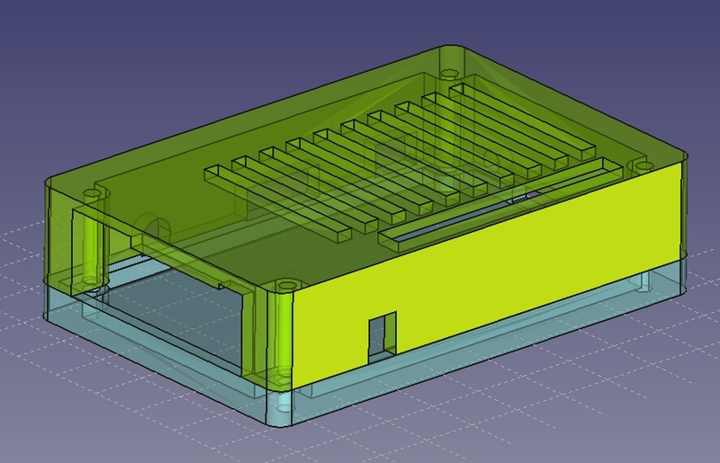

Небольшой лайфхак для отключения питания Ender3 от Octoprint

С того момента, как я подключил свой 3d принтер Creality Ender3 к Orange Pi PC и настроил octoprint для удалённой печати, меня очень раздражала одна особенность реализации платы управления эндера. В случае, когда питание принтера было выключено, плата продолжала питаться по линии +5в через USB разъём. Дисплей светился, на нём отображалась информация с датчиков температуры (хоть и не настолько контрастно, как при включенном питании), можно было перемещаться по меню, а вентилятор охлаждения хотенда постоянно вращался (не в полную силу конечно, но это тоже создавало лишний звуковой фон). Более того, octoprint не терял соединения с принтером, и если при этом включить нагрев стола или хотенда, изображение на дисплее становилось менее различимым, но подсветка продолжала работать. Другими словами, есть явная недоработка со стороны Creality и вчера я это исправил, потратив на это примерно 0 рублей, сотые доли копейки и три минуты.
Теги: 3d-printing
Для чего нужен 3d принтер (часть 2)

В продолжение одного из предыдущих постов, хочу продолжить тему о корпусах и в продолжение другого - о 3d печати. Как я уже говорил, корпуса для Orange PI PC стоят от 300 до 700 с лишним рублей. О том, сколько можно сэкономить, используя 3d печать, будет под катом.
Теги: 3d-printing, pi
Для чего нужен 3d принтер (часть первая)

В закромах оф родина у меня давно пылился старый линейный светильник. Вероятно я бы применил его где-нибудь и раньше, если бы не одно но - штатные крепления от него были безвозвратно утеряны ещё лет *дцать тому назад. Светильник периодически использовался в качестве временного источника освещения и для того, чтобы была хоть какая-то возможность его закрепить, я сделал крепления из зажимов от пакетов с хлебом. Лютый колхоз, я согласен, но эти желтые штуки уже не раз выручали меня при необходимости прикепить что-то к чему-то, в то время когда другие способы были исчерпаны. Вот и в этом случае подобная магия помогла прикрепить светильник к полке над 3d принтером в шкафу. Проблема была в низкой надёжности таких креплений - светильник периодически падал со своего насиженного места, стоило мне лишь сегка его задеть.
В очередной раз, когда он сбросился вниз, осознав тщетность своего бытия, мне надоело бороться с хлебной закруткой и герр Штангенциркуль нам помог в очередной раз. Проектирование - 5 минут, печать - около 25 минут. Фотографии процесса и результата - под катом.
Теги: 3d-printing
Про весеннее обострение
Этой весной столько всего приключилось и накопилось, что на ведение блога просто не хватало сил и времени. Постараюсь исправить это упущение и вывалю всё скопом. Скажу сразу, под обострением я в данном случае имею в виду обострение моего желания изменений, стремления к чему-то новому и избавление от чего-то старого.
Теги: жизненное, 3d-printing, moto, keyboards, smarthome